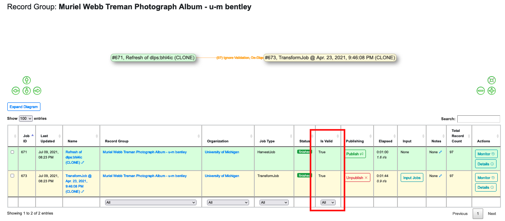
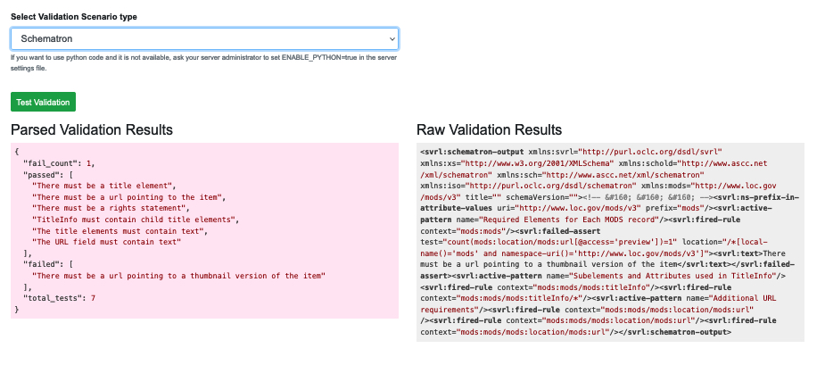

Combine validates Records by applying pre-configured Validation Scenarios. (See Part 6: Configuration for instructions on how to create Scenarios.)
Combine validates Records by applying pre-configured Validation Scenarios to a Job while it’s running. (“Part 6: Configuration” explains how to create Scenarios.) A Scenario can be applied to any Job in Combine (as described in Parts 8-10), so the results of Validation tests can appear on several different pages.
|  |
| The “Is Valid” column in the table of a Record Group page |
Validation information on the Record Group page appears as a column in the Jobs table. The column simply gives a true/false to the question of whether all of the Records in the Job were valid or not. (See Part 12: Job Results and Record Details)
When a Record fails any test from any Validation Scenario applied to its Job, Combine considers the Record to be “invalid.” So even one Record in a very large Record Group can trip this result to “false.” |
| Column and tab showing Validation information on a Job Details page |
The table on a Job Details page offers another simple display that shows only the number of Records that failed to validate.
However, the Job Details page also offers a tab labeled “Validation” which shows the Validation Scenario(s) that was applied to the Job, what type(s) of Validation Scenario it was, and the number of Records that failed to validate.
If any Records of a Job are invalid, the table will show a blue button to “See Failures for this Validation.” Pressing this button will bring up a table displaying the Database ID, Record ID, “Results Payload,” and “Failure Count” for each invalid Record in the Job. This table can be extremely useful, because the “Results Payload” will offer an explanation of what is wrong with each record (drawn from the test that was applied, such as Schematron). The “Failure Count” will alert the user if a Record failed more than one Validation Scenario:
 |
| Table display of invalid Records for a Job |
If we go back to the Job Details page, we see that the table also displays a red button to “Remove Validation from Job.” Pressing this button will NOT fix whatever problem an invalid Record may have. It simply removes the Validation Scenario from that Job, as if the Scenario was never applied to the Job in the first place. If that Job was showing a “false” result for “Is Valid” on the table of its Record Group page, that value will now show “true.” But any validation problem with any Record(s) in the Job will continue to be there until the user actually fixes it.
Below the table is a green button to “Run new Validations for this Job.” This is a simple way to test whether a fix to an invalid Record has worked or not.
 |
| Validation Results for an invalid Record |
The table on this page is obviously similar to the one on the Job Results page, but applies to a single Record.
The table includes a blue button to “Run Validation,” and if this is clicked, Combine will display information about the Validation Scenario when applied to that Record:
 |
| Raw Results of a Schematron Validation Scenario applied to a Record |
Note the green button to “Test Validation. Clicking this will show parsed and raw results from the Validation Scenario on just that Record. Note the drop down right above the green button which will allow you to select different scenarios to test:
|  |
| Parsed and Raw Results of a Test Validation |
To put these sections in context, see “Part 12: Job Results and Record Details” which covers all of the tables and tabs of information on those pages.